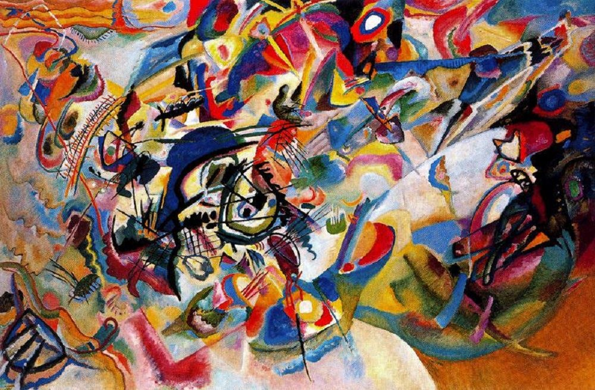
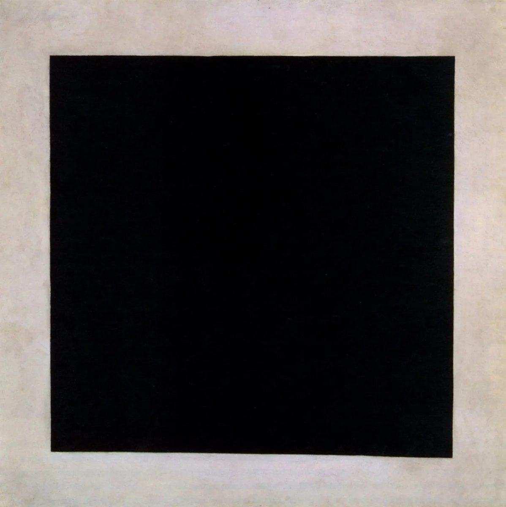
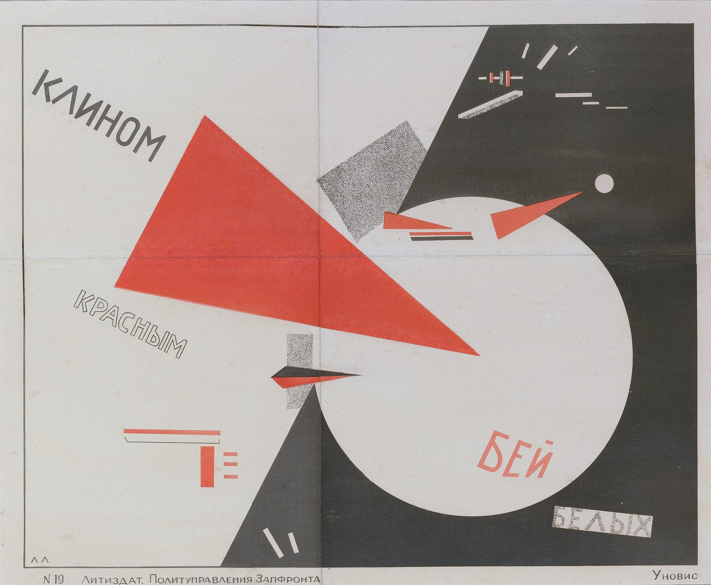
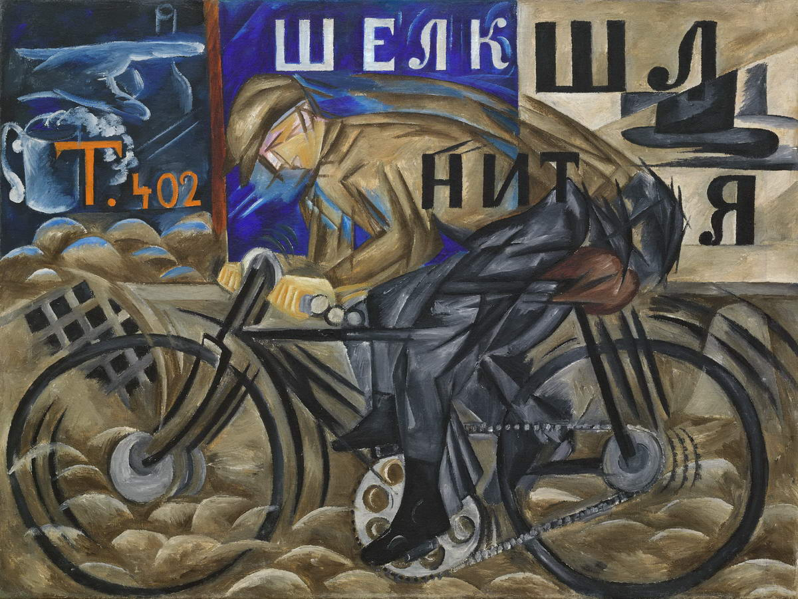
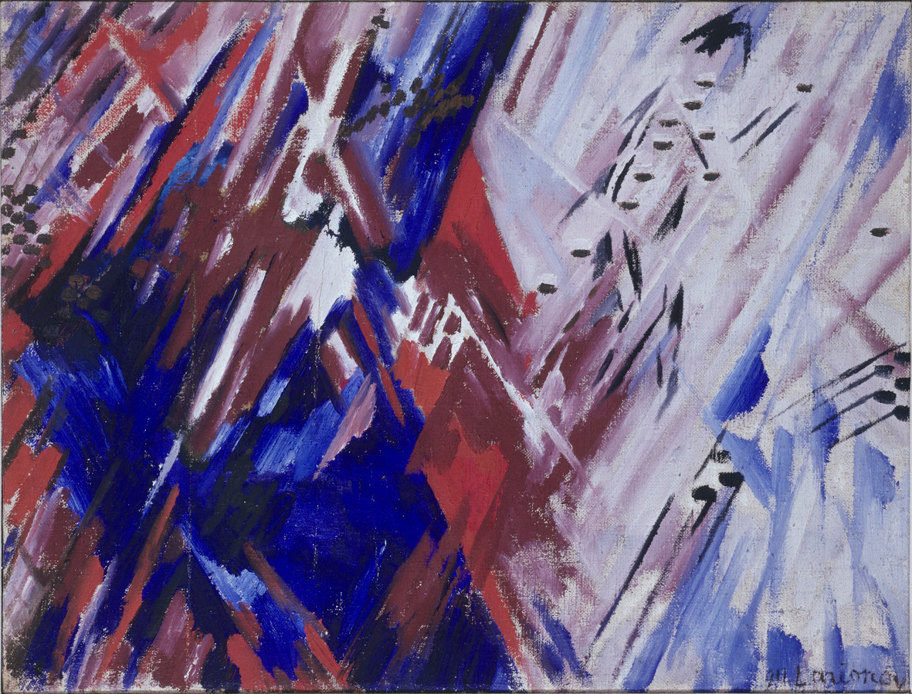
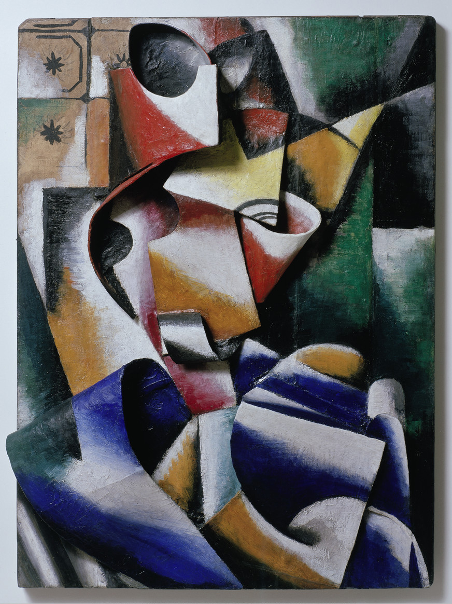

추상미술의 독립 계보
러시아 아방가르드(Russian Avant-Garde)는 단일 화풍이 아니라 20세기 초 러시아와 초기 소련에서 전개된 추상·비대상미술·미래주의·광선주의·절대주의·구성주의·분석미술 등 여러 전위적 실험을 묶는 상위 개념이다. 1917년 혁명은 매우 중요한 전환점이지만, 말레비치의 절대주의와 칸딘스키의 추상 실험처럼 핵심 변화는 이미 혁명 이전부터 진행되고 있었다.
러시아 아방가르드 자체는 절대주의·구성주의 등을 포괄하는 상위 문화현상이다.
입체주의·미래주의·민속·이콘·상징주의가 결합하며 현실 재현의 규칙을 해체한다.
말레비치·칸딘스키 등은 사물이 없어도 회화가 가능한지 탐구한다.
일부 작가들은 회화에서 디자인·건축·사진·생산·선전으로 이동한다.
바우하우스, 데 스틸, 국제주의 디자인과 추상미술에 장기적 영향을 준다.
브루벨·청장미파가 색·평면·정신성을 현실 재현에서 해방한다.
민속미술, 간판, 이콘, 입체주의·미래주의가 뒤섞이며 러시아적 전위 언어가 형성된다.
색·선·형태가 음악처럼 독립적으로 정신적 감흥을 만들 수 있다는 실험이 전개된다.
말레비치의 절대주의와 타틀린의 반부조가 러시아 비대상미술의 서로 다른 두 방향을 선명하게 드러낸다.
전위예술가에게 새로운 제도와 사회적 역할에 대한 기대가 생긴다.
구성주의, 프로덕티비즘, 사진·포스터·건축·직물 등으로 실험이 확장된다.



입체미래주의·광선주의·절대주의가 이미 기존 재현과 아카데미의 규칙을 해체하고 있었다.
새로운 학교·박물관·선전·공공미술 체계에 전위예술가들이 참여하며 예술의 사회적 역할이 급격히 확대되었다.
포스터·사진·직물·무대·건축·출판 등 실제 생산영역으로 이동하는 작가가 많아졌다.
1920년대 말부터 소비에트 문화정책이 중앙집중적으로 재편되고, 1930년대에는 사회주의 리얼리즘이 공식 예술의 중심이 되면서 독립적인 전위운동의 활동공간이 크게 축소되었다. 작가들은 디자인·교육·건축으로 이동하거나 표현을 변경했고, 일부는 탄압을 받았다.
| 국가·지역·세부 사조 | 지역적 특징 | 대표 화가·제작자 |
|---|---|---|
| 모스크바 — 민속·빛·추상 |
| 바실리 칸딘스키, 나탈리야 곤차로바, 미하일 라리오노프 |
| 페트로그라드 — 구성주의·생산주의 |
| 블라디미르 타틀린, 알렉산드르 로드첸코, 류보프 포포바 |
| 비텝스크 — 절대주의 교육·UNOVIS |
| 카지미르 말레비치, 엘 리시츠키 |
러시아 아방가르드는 하나의 사조가 아니라 네오프리미티비즘, 레이요니즘, 미래주의, 절대주의, 구성주의가 짧은 시간에 겹쳐 폭발한 장이다.
본문에 이름이 등장하는 주요 화가는 아래처럼 대표작 한 점과 함께 읽어야 한다. 작품은 해당 사조의 핵심 특징을 실제 화면에서 확인하도록 고른 것이다.
색과 선의 충돌을 통해 대상 없이도 감정과 정신성을 구성한 초기 추상의 정점이다.
대상 재현을 포기하고 검은 평면 자체를 새로운 회화의 출발점으로 제시한다.
기하학적 형태를 정치적 커뮤니케이션으로 전환한 비텝스크 절대주의의 그래픽 실험이다.

도시의 속도와 민속적 평면성이 결합해 러시아식 현대성을 만든다.

사물의 윤곽 대신 교차하는 빛의 광선을 화면의 주제로 삼는다.
조형·건축·정치적 미래의 설계를 결합한 구성주의의 상징적 프로젝트다.
회화의 재현을 끝까지 환원한 뒤 사진·포스터·디자인으로 나아가는 전환점이다.

인물의 형태를 분해하고 재구성해 이후 구성주의로 이어질 구조적 감각을 보여준다.